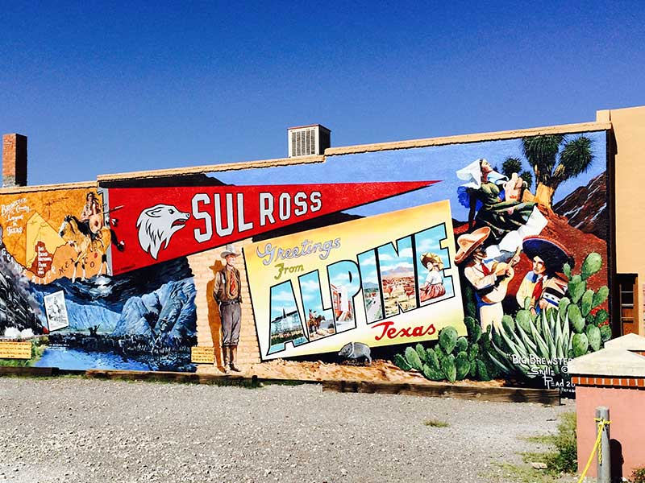

Welcome to Far West Texas
Maybe it’s the vast, open landscape, the never-ending sky, or the still silence of the desert that lets you truly take in every moment you’re here. Come enjoy a place of such beauty and grace.

ALPINE
This "Big" city college town stays up late, serving cold drinks and live music at the Railroad Blues Beer Joint, Saddle Club and Granada Theatre.
Get to know Alpine
MARFA
This quiet, artsy town celebrates minimalism, especially Donald Judd and The Chinati Foundation.
Get to know Marfa
FORT DAVIS
This remote, tiny town has the biggest stars in Texas best seen from the McDonald Observatory.
Get to know Fort Davis